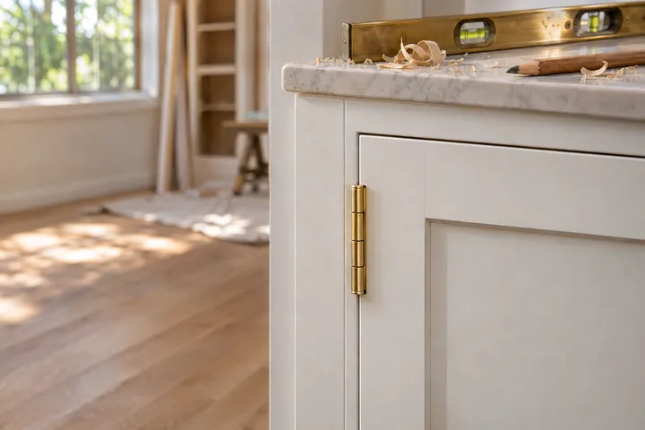

Built around better homes and better conversations.
Blue Hammer Remodeling is a design-led remodeling company based in Olney, Maryland. We work on kitchens, bathrooms and lower levels in the established neighborhoods of Montgomery and Howard County, and we would rather do fewer projects well than many projects quickly.

Strong ideas. Careful execution.
The blue hammer in our mark stands for the hands-on side of remodeling: the framing, the tile, the trim. The roofline above it is the reason for the work: a home that functions better and feels right for the people in it.
We founded Blue Hammer on a simple observation about remodeling in this area: homeowners in Potomac, Bethesda, Chevy Chase and Olney are not short of contractors. They are short of contractors who will plan carefully, say what things really cost, show up when they said they would and sweat the last quarter inch. That is the company we are building.
Start a Project Conversation
Design-led, close to home, honest about money.
Design before price
We draw the room, choose the materials with you and write the scope before we commit to a number. It is slower at the start and far more predictable at the end.
A tight service area
Maryland only, within roughly 40–50 miles of Olney. Short drives mean full days on site, the same crew every day and trade partners who know 1930s plaster as well as 2005 drywall.
Materials that age well
Plywood boxes and inset or full-overlay doors, natural stone or honest quartz, porcelain tile set flat, solid-brass hardware. We specify what we would put in our own homes.
One point of contact
You talk to the people running your job. Weekly updates, decisions logged in writing, no surprises on the invoice.
Respect for the house
Dust barriers, floor protection, daily clean-up and care for the original details worth keeping, whether that is heart pine in Kensington or a Carderock Springs beam ceiling.
Permits done properly
Montgomery County DPS, City of Rockville, Howard County DILP and the municipal or historic reviews layered on top. We file them and schedule the inspections.
What you will and won’t find on this site.
We would rather earn trust slowly than borrow it.
- No invented reviews. The client feedback page stays empty until there is verified feedback to show.
- No borrowed project photos. We never present someone else’s work, or illustrative imagery, as a finished Blue Hammer project. Photos of our own completed projects appear only with the homeowner’s permission.
- Planning ranges, not teaser prices. Our cost ranges reflect what projects in this area really cost; the exact price comes from your drawings.
- Licensing you can check. Maryland contractors must hold an MHIC license. Verify any contractor’s number, including ours, before you sign; ours is published in the footer once confirmed for display.
Let’s talk about what your home could become.
Whether you have drawings in hand or just a few ideas, tell us about your project. We review every request and reply with honest next steps.
Prefer to speak with us?